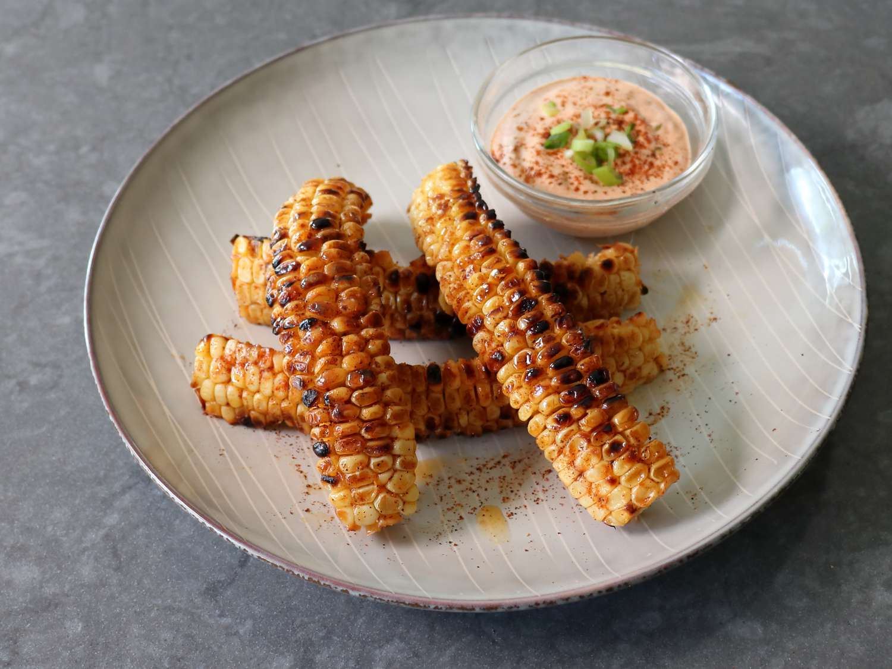

Home
Corn Ribs

| Prep Time: |
Servings: |
| 15 Mins |
4 |
Ingredients
- 4 corn cobs
- 3 tablespoons olive oil
- 1.5 teaspoons garlic powder
- 2.5 teaspoons smoked paprika (or regular paprika)
- 2 teaspoons salt
- 2 teaspoons black pepper
- 50g (3 tablespoons) unsalted butter
- 1 garlic clove, finely minced
- 2 tablespoons chopped parsley or cilantro
Instructions
- Prep the Corn:Cut the ends off each corn cob for stability. Stand each cob upright and carefully cut in half lengthwise. Lay flat, then cut each half in half again to get quarters—these are your ribs. Cutting corn can be tough—parboil for 3 minutes to soften slightly, if desired, and always use a stable surface and careful technique
-
Season: In a large bowl, toss corn ribs with olive oil. In a separate bowl, mix the garlic powder, paprika, salt, and pepper, then sprinkle this seasoning over the corn, tossing to coat evenly
-
Make Garlic Butter:Melt butter in a small pan; add the minced garlic and gently stir for 20 seconds until fragrant. Set aside and keep warm
-
Cook:
- Oven: Preheat to 200°C (400°F). Arrange the ribs kernel-side up on a lined baking sheet. Bake for 25-30 minutes until browned and curled
- Air Fryer: Preheat to 190°C (375°F). Air fry for 10-13 minutes until curled and golden.
- BBQ: Grill on high, kernel side down, for 6 to 8 minutes, then each cut side for another 1 minute.
- Finish: Toss cooked ribs with the warm garlic butter and garnish with parsley or cilantro. Serve hot, optionally with pink sauce or chipotle crema on the side.